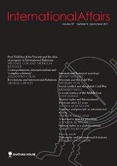

收录于合集

Trump, American hegemony and the future of the liberal international order
简 介
【作者简介】 道格·斯托克斯 （Doug Stokes）,英国埃克塞特大学政治学系教授, 埃克塞特大学战略与安全研究所高级研究员、英国皇家国际事务研究所成员、英国皇家联合服务研究所（RUSI）高级助理研究员。主要研究方向为国际安全与战略，出版过多部关于美国对外政策、大战略以及世界秩序方面的著作。
【编译】 ** 崔宇涵**
【校对】 高嘉琳、庞林立
【来源】 International Affairs，Volume 94, Issue 1, 1 January 2018, pp.133-150

【期刊简介】 International Affairs，成立于1922年，是英国皇家国际事务研究所出版的国际关系类学术期刊（双月刊）。该期刊涵盖国际关系的各种主题，兼具学术严谨性和政策相关性。根据2016年ISI期刊引用报告，该期刊的影响因子为1.935，在国际关系类杂志中排名第16。
【期刊网址】
https://www.chathamhouse.org/research/publications/ia
【提纲】
摘要
特朗普式世界观：交易双边主义（ transactional bilateralism ）
全球化的美国国家利益
在自由主义秩序中建构优势
特朗普时代的全球化与新自由主义秩序
结论
**
**
核心观点
特朗普政府认为，美国在自由主义国际秩序中的领导地位是过于沉重的负担，从而主张是基于利益算计的 “美国第一”双边主义。作者认为这种认知并不准确，并采用霸权稳定论论证，美国的国家利益已在战后国际体系中被全球化；并指出，虽然美国维持其在自由主义国际秩序中的霸权地位的成本不断上升，但是美国的霸权地位给予了其巨大的地位优势（positional advantages），包括影响其他国家的政策、向外转嫁国内危机，以及按照美国的利益构建全球经济体系。同时，作者指出，新自由主义全球化加重了美国国内的经济不平等，导致国内大量的工人阶级不再认同美国的国际领导地位，这也是特朗普能够上台的重要原因。
作者的结论是，即使特朗普的政策将对自由主义国际秩序产生不可挽回的损害，美国领导下的自由主义国际秩序仍是最好的选择；但是美国精英们若想在特朗普下台后重振美国在自由主义国际秩序中的领导地位，必须重建美国的国内秩序。
论证过程
特朗普式世界观：交易双边主义（ transactional bilateralism）
特朗普的“交易双边主义”在军事安全方面并不明显，特朗普虽然质疑美国传统同盟关系的有效性，但实际上，特朗普的军事政策依然有着很大的延续性。而在对外经济方面，特朗普对于全球化和自由贸易的质疑，更鲜明地体现出来“交易双边主义”的特点，例如美国退出TPP和《巴黎协定》、寻求重新谈判北美自贸协定。特朗普“交易双边主义”核心是对于现存国际体制的质疑，他认为这一体制下美国在牺牲本国利益帮助其他国家，损害了美国的经济利益。
全球化的美国国家利益
本节以霸权稳定论（ hegemonic stability theory）论证美国为何要一直维持其霸权地位。金德尔伯格（Kindleberger）与吉尔平（Gilpin）在此问题上有不同的观点：金德尔伯格认为，霸权国建立并维持国际秩序，是基于所有国家共同利益的考量，无私地向国际社会提供公共物品；吉尔平认为，霸权国维持国际秩序完全是为了自身利益，最典型的例子就是美国在1973年经济受挫时放弃了布雷顿森林体系。
本文的观点是，美国之所以选择维持霸权地位和自由主义国际秩序，是因为霸权地位给美国带来了巨大的结构性优势，霸权国可以塑造国际秩序、获得巨大的地位优势，其收益超过了提供国际公共物品的成本。
在自由主义秩序中建构优势
本节详细论述了美国在自由主义国际秩序中的地位优势。美国的第一个地位优势是 “美元霸权”，美元的地位使美国可以轻易地影响全球金融市场、改变利率以转嫁国内经济危机，并以较小的成本发起军事行动维持美国的地缘政治优势。其次，美国主导的全球安全体制使美国可以按照自身利益，构建地区国际关系和他国的经济偏好。最后，美国主导的自由主义国际秩序为美国跨国公司的发展提供了良好的环境。
因此，在自由主义国际秩序中的领导地位使美国获得了巨大的利益，放弃这种地位对于美国来说是不理性的。而特朗普上台、并执行反自由主义国际秩序的政策的原因，来自于美国国内。
特朗普时代的全球化与新自由主义秩序
经济全球化重新配置了全球经济的资源，很大程度上帮助缓解了国家间经济不平等的现象，但是却加剧了各国国内的收入不平等。这一点可以从胜选的特朗普的选票分布看出来：特朗普获得了大部分中下层白人工人的支持，以及大部分制造业州的选票。经济全球化使得美国的精英阶层得利，而损害了美国工人阶级的利益。这些国内问题同样削弱了其他国家对于美国全球领导地位的认同。
而特朗普虽然借助着国内的不满力量上台，但是他的政策并不利于缩小美国国内的收入差距，因此并不能建立维持美国霸权地位必需的国内稳定。
结论
特朗普的外交政策理念将孤立主义与成本-效益双边主义（cost–benefit bilateralism）相结合，对美国主导的自由主义国际秩序有巨大的怀疑。但是借鉴霸权稳定论的分析表明，美国维持现有霸权的获利依然远远大于成本。
全球化对美国工人产生了巨大的负面影响，这成为推动特朗普掌权的重要原因；但特朗普的政策并不利于解决美国面临的国内外困境，还可能会严重损害美国的声望。维持自由主义国际秩序对美国来说仍然是最佳选择，但美国必须解决其国内长期存在的问题，这些问题正在动摇美国的国内秩序。
点击 阅读原文 可获取全文pdf版！
**
**
更多阅读：
【一周预告】国政学人下周（10.22-10.26）文章推送安排预告！
**【SSCI编译】特朗普的国家安全战略：“美国第一”遇上建制派
**
**【IS杂志·阿克顿】纠缠的升级：指挥和控制系统的弱点如何增加意外核战争的风险？
**
**【FA杂志】自由主义秩序的神话——历史偶然到传统观念的演变
**
**【外文编译·IS杂志】中美在东南亚的竞争
——权力转移还是竞争共存？
**
【外交事务】海伦·米尔纳：罗伯特·吉尔平的遗产对今天国际政治的启示
**
**

为方便学人及时接收高质量文章推送
别忘了把国政学人设置 星标 哦~
**
**